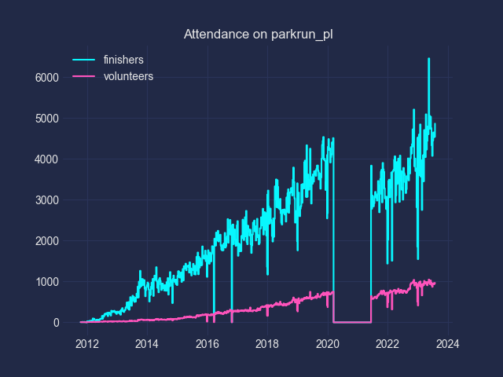

Attedndance Total for parkrun Poland The chart includes not only Saturdays but also special events.  Specific location augustow bialystok blonie bloniekrotoszyn bulwarnadwisla bydgoszcz charzykowy chelm chrzanow cieszyn dabrowka dzialdowo dzierzgon ekomarina elk fortvwlochy gdansk gdanskpoludnie gdynia glogow gorzowwielkopolski gostyn grodziskmazowiecki grudziadz jablonna jeleniagora jeziorogorne jezioroswarzedzkie jeziorozatorze kalisz katowice kedzierzynkozle kolobrzeg konstancinjeziorna koscian koszalin krakow kutno lasaniolowski lasdebinski lasklasztorny laslagiewnicki lasekmarcelinski leszno lubin lodz malyjeziorak ogrodsaski olsztyn opole pabianice parkimjanapawlaii parkjanapawlaiirymanowzdroj parklipowy parkmiejskilowicz parkmiejskisosnowiec parkmiejskiwejherowo parkmodrzewie parknawyspie parknadnyski parkradolinskich parkzdrojowykudowazdroj polemokotowskie poznan pruszkow puszczaniepolomicka rezerwatstrzelnica rumia rzeszow skierniewice skorzec slodowowloclawek swidwin swinoujscie szczecin szczecinek szubiankizagorow tczew torun tychy warszawabrodno warszawapraga warszawaursynow warszawazoliborz wolbrom wroclaw wzniesienieosowy zalewzyrardowski zamekwmalborku zary zielonagora zielonyjar